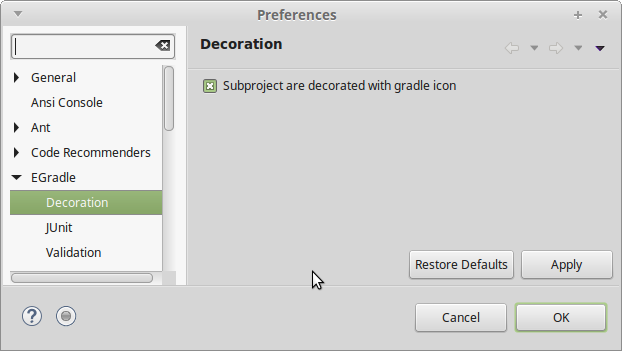

User guide
User guide
Project decoration
Projects inside gradle root folder are marked with an EGradle icon:

Changing root project
When you change your root project the markers will be updated.
Turn off subproject decoration
The decoration for sub projects is done at top left corner of the project image. It can hide other decorators - e.g. the bean marker of an EJB project.
If you want to view such decorator overlays instead of the egradle marker icon, you are able to turn off the
sub project decoration via preferences:
